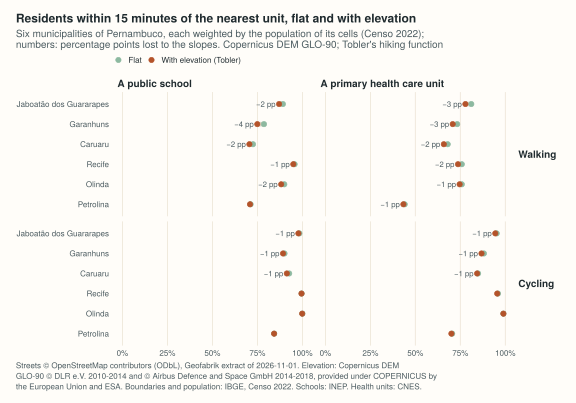
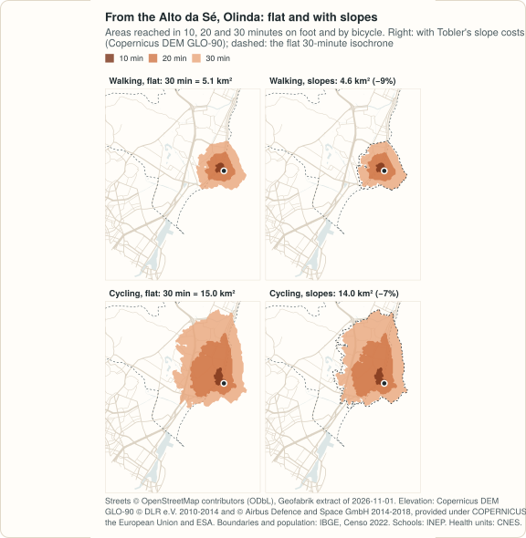
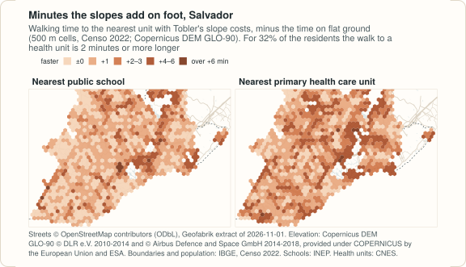
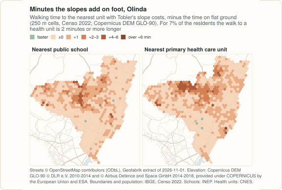
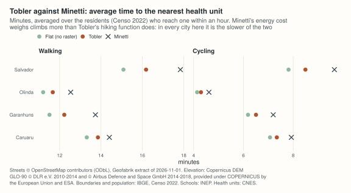
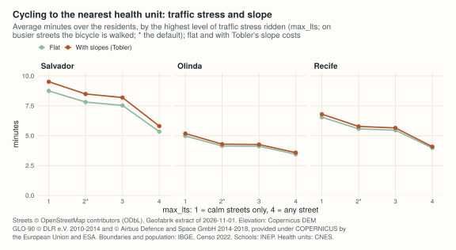

The Recife and Caruaru example routes on streets without elevation. This one adds an elevation raster and asks what it changes, on foot and by bicycle:
- in Pernambuco: Recife, Olinda, Jaboatão dos Guararapes, Caruaru, Garanhuns and Petrolina, each on its own network, and the Região Metropolitana do Recife (14 municipalities, 3.7 million people) as one network, where the question is also how many residents have their nearest school or health unit across a municipal border;
- in Salvador, in Bahia, the one city from outside Pernambuco, taken as the steepest case: an escarpment splits its upper and lower towns. It is drawn beside Olinda, the hill town of the Recife metropolitan region, whose historic centre sits above a flat coastal strip.
The short version: slopes matter, less than a first run suggests. The open elevation model at 30 m reads the tops of buildings, and on a flat street between towers that alone costs as much as the hills do elsewhere. The page measures that before anything else, and then uses the 90 m version of the model, whose results are on the low side.
The data steps are those of the Recife and Caruaru example, kept as
functions in site/figures/pernambuco-data.R,
which this page sources. The output shown is what the code prints; it
was computed on 2026-11-12.
Streets only. No open GTFS feed was found for Recife or for Salvador: neither Pernambuco nor Bahia has a feed in the Mobility Database catalogue (read on 2026-11-12), and a search for “gtfs” on the open-data portal of the city of Recife returns nothing. So there is no public transport here. (Grande Recife publishes a feed on its own site, found after this page was written: the Recife metropolitan region example routes on it.)
The data
| Data | Source | Licence |
|---|---|---|
| Streets |
OpenStreetMap,
extract of the Nordeste region by Geofabrik,
dated 2026-11-01 (445 MB, MD5
93318fcddd85a53e8386eaa93588847c) |
ODbL 1.0 |
| Elevation | Copernicus DEM, GLO-90 (3 arc seconds, about 90 m) and, for comparison, GLO-30 (1 arc second): a surface model, 2021 release, files of 2022-05-09, read from the tiles on the AWS open data registry on 2026-11-12 | Copernicus DEM licence: free of charge, with the attribution at the end of this page |
| Municipal boundaries | IBGE, malhas municipais (API, version 3) | public data, IBGE |
| Population |
IBGE,
Censo Demográfico 2022, census tracts with their population,
variable v0001, files of Pernambuco (44 MB) and Bahia (118
MB) |
public data, IBGE |
| Schools | INEP, Catálogo de Escolas 2023, with the coordinates of each school,
as published by Ipea’s geobr
(schools_2023, 101 MB for Brazil) |
public data, INEP; geobr is MIT |
| Health units |
CNES, Ministério da
Saúde, through OpenDataSUS
(cnes_estabelecimentos_csv.zip, 57 MB for Brazil, updated
daily; downloaded on 2026-11-12) |
open data, Ministério da Saúde |
prepare_city() cuts the streets of a municipality (or of
the 14 of the metropolitan region) with a buffer around it, puts the
census population on a hexagonal grid (cells 500 m apart; 250 m in the
small municipality of Olinda) and lists the public schools in operation
and the primary health care units (CNES types 1 and 2) in the cut area.
prepare_dem() crops the elevation model over the box of
those streets, on the model’s own grid. Both need osmium; the crop uses GDAL
through sf, and the checks below use terra.
library(peabiru)
library(sf)
options(timeout = 3600)
# the data steps of the Recife and Caruaru example, as functions:
# prepare_city() and prepare_dem()
pipeline <- Sys.getenv("PEABIRU_PE_SCRIPT", paste0(
"https://raw.githubusercontent.com/StrategicProjects/peabiru-routing/main/",
"site/figures/pernambuco-data.R"))
Sys.setenv(PEABIRU_PE_CACHE = Sys.getenv("PEABIRU_EXAMPLE_DATA", "pe-data"))
source(pipeline)
data_dir <- pe_cache()
keys <- c("recife", "olinda", "jaboatao", "caruaru", "garanhuns", "petrolina",
"rmr", "salvador")
summary_of <- function(k) {
dir <- prepare_city(k)
prepare_dem(k, arcsec = 3) # GLO-90, into <city>/network-dem90/
cells <- read.csv(file.path(dir, "cells.csv"))
data.frame(key = k,
extract_MB = round(file.size(file.path(dir, "network", paste0(k, ".osm.pbf"))) / 1e6, 1),
dem_MB = round(file.size(file.path(dir, "network-dem90", paste0(k, "_dem90.tif"))) / 1e6, 1),
cells = sum(cells$population > 0),
people = round(sum(cells$population)),
schools = nrow(read.csv(file.path(dir, "schools.csv"))),
health_units = nrow(read.csv(file.path(dir, "health.csv"))))
}
do.call(rbind, lapply(keys, summary_of))
#> key extract_MB dem_MB cells people schools health_units
#> 1 recife 16.0 0.6 1107 1488797 937 511
#> 2 olinda 3.4 0.1 857 349970 260 160
#> 3 jaboatao 8.2 0.6 1286 644037 416 238
#> 4 caruaru 1.9 1.1 4489 378048 216 102
#> 5 garanhuns 1.0 0.6 2294 142506 133 90
#> 6 petrolina 3.1 10.7 21363 409608 239 120
#> 7 rmr 21.2 1.9 13096 3730664 1203 691
#> 8 salvador 9.0 0.3 1567 2418518 652 202people is the population of the Censo 2022 in the cells;
cells, the cells with residents. Schools and health units
include those in the buffer around each area (10 km around Recife, 3 km
around the metropolitan region, Olinda and Salvador, 5 km around the
others), so a trip can end across the border. Petrolina faces Juazeiro,
in Bahia, across the São Francisco: its health units are read from the
CNES rows of both states. In Salvador’s buffer there is mostly sea.
The elevation model, checked against the ground
The Copernicus DEM is a surface model: radar measured the top of what it saw, roofs and tree crowns included. It comes at 1 arc second (GLO-30, about 30 m) and, averaged by its publisher, at 3 (GLO-90). peabiru samples the raster every 10 m along each street, at the nearest pixel, so a step between two pixels becomes a slope on one 10 m stretch: a real hillside is read as a staircase, and a roof next to a street as a wall. Three checks, before any routing.
Voids, the sea. Neither raster has a void over these cities. The sea has no tiles and is taken as 0 m, as the registry’s documentation says; a few pixels (water, mangrove) are below zero, down to -17 m.
dem_of <- function(k, arcsec = 3) {
prepare_dem(k, arcsec = arcsec)
tag <- if (arcsec == 1) "" else "90"
terra::rast(file.path(data_dir, k, paste0("network-dem", tag), paste0(k, "_dem", tag, ".tif")))
}
r <- dem_of("rmr")
v <- terra::values(r, mat = FALSE)
c(res_arcsec = terra::res(r)[1] * 3600, voids = sum(is.na(v) | v < -1000),
sea_share = round(mean(v == 0), 3), below_0_share = round(mean(v < 0), 4),
min_m = round(min(v), 1), max_m = round(max(v), 1))
#> res_arcsec voids sea_share below_0_share min_m
#> 3.0000 0.0000 0.1950 0.0014 -17.1000
#> max_m
#> 446.4000A flat district. Boa Viagem, in Recife, is a coastal plain a few metres above the sea, lined by residential towers. Its streets, sampled as peabiru samples them:
# street samples every 10 m at the nearest pixel
streets_z <- function(k, arcsec = 3, bridges = FALSE) {
lines <- suppressWarnings(st_read(file.path(data_dir, k, "network", paste0(k, ".osm.pbf")),
"lines", quiet = TRUE))
lines <- lines[!is.na(lines$highway), ]
is_bridge <- grepl('"bridge"=>"(yes|viaduct)"', lines$other_tags)
lines <- st_transform(lines[if (bridges) is_bridge else !is_bridge, ], 31985)
lines <- lines[as.numeric(st_length(lines)) >= 20, ]
pts <- st_line_sample(lines, density = 1 / 10, type = "regular")
n <- vapply(pts, function(p) if (st_is_empty(p)) 0L else nrow(st_coordinates(p)), 1L)
ll <- sf_project(st_crs(31985), st_crs(4326), st_coordinates(pts)[, 1:2])
data.frame(way = rep(lines$osm_id, n), lon = ll[, 1], lat = ll[, 2],
z = terra::extract(dem_of(k, arcsec), ll, method = "simple")[, 1])
}
in_boa_viagem <- function(lon, lat) lon > -34.925 & lon < -34.885 & lat > -8.145 & lat < -8.09
sapply(c("GLO-30" = 1, "GLO-90" = 3), function(arcsec) {
s <- streets_z("recife", arcsec)
bv <- s[in_boa_viagem(s$lon, s$lat), ]
same_way <- bv$way[-1] == bv$way[-nrow(bv)]
c(samples = nrow(bv), round(quantile(bv$z, c(0.1, 0.5, 0.9, 0.99)), 1),
steps_over_2m = round(mean(abs(diff(bv$z))[same_way] > 2), 3))
})
#> GLO-30 GLO-90
#> samples 23528.000 23528.000
#> 10% 2.500 3.100
#> 50% 4.500 4.700
#> 90% 9.200 9.100
#> 99% 13.400 12.900
#> steps_over_2m 0.075 0.025Half of the samples read 4.5 m or more and one in ten more than 9 m, on a plain by the sea: the higher readings are roofs and trees. On GLO-30, 7.5% of the 10 m steps along a street change by more than 2 m, a slope of 20% that is not there; on GLO-90, 2.5%. What that does to travel times is measured below.
Bridges. A surface model should see the deck of a bridge; a 90 m pixel mostly sees what is under it. For each bridge or viaduct of the metropolitan region, how far the lowest sample falls below the average of its two ends:
b <- streets_z("rmr", bridges = TRUE)
sag <- sapply(split(b$z, b$way), function(z) {
if (length(z) < 3) NA else mean(z[c(1, length(z))]) - min(z[-c(1, length(z))])
})
sag <- sag[!is.na(sag)]
c(bridges = length(sag), dip_over_2m = round(mean(sag > 2), 3),
dip_over_5m = round(mean(sag > 5), 3), worst_m = round(max(sag), 1))
#> bridges dip_over_2m dip_over_5m worst_m
#> 358.000 0.209 0.036 8.700One bridge in five dips by more than 2 m in the raster, and a few by more than 5 m (the viaducts of Avenida Caxangá, in Recife, by almost 9 m): those cross a valley that the deck does not go down into, and walking or cycling over them is costed as if it did. They are few among 369 thousand street edges, but an analysis of one corridor should look at its bridges.
Networks with and without elevation
The same extract is read from network/, with no raster,
and from network-dem90/, where the raster turns slope costs
on ("TOBLER", the default, or "MINETTI");
"TOBLER30" below is Tobler on GLO-30, from
network-dem/. Car times do not change with elevation.
networks <- list()
network <- function(k, elevation = "NONE") {
id <- paste(k, elevation)
if (is.null(networks[[id]])) {
if (elevation == "TOBLER30") prepare_dem(k) # GLO-30, into network-dem/
dir <- file.path(data_dir, k, switch(elevation, NONE = "network", TOBLER30 = "network-dem",
"network-dem90"))
networks[[id]] <<- build_network(dir, elevation = sub("30$", "", elevation))
}
networks[[id]]
}
system.time(network("rmr"))[["elapsed"]]
#> [1] 0.588
system.time(network("rmr", "TOBLER"))[["elapsed"]]
#> [1] 0.638
network("rmr", "TOBLER")
#> <peabiru_network>
#> data path: pe-data/rmr/network-dem90
#> streets: 140,267 vertices, 368,800 edges
#> transit: none (no GTFS feed)
#> elevation: TOBLERThe metropolitan region is one extract of 21 MB and builds in about a second, with or without the raster (the times above are of a busy laptop, with the default number of threads).
For the browser demo, it is too large. The demo of the documentation site takes extracts under 3 MB (Recife’s municipality is 2.8 MB). Stripped the same way (no buildings, no object metadata), the 14 municipalities are 8.9 MB; with nothing but the streets and the turn restrictions, 5.3 MB. So the region is not in the demo; a dashboard would load it on a server, or by municipality.
Which raster: a flat district as control
The time from every cell to the nearest school and health unit is the measure of the Recife and Caruaru example. In Boa Viagem slopes should cost nothing, so whatever a raster adds there is the raster’s own doing:
grid_of <- function(k) {
g <- read.csv(file.path(data_dir, k, "cells.csv"), colClasses = c(id = "character"))
g[g$population > 0, ]
}
units_of <- function(k, what) {
read.csv(file.path(data_dir, k, paste0(what, ".csv")), colClasses = c(id = "character"))
}
# the time from each cell to the nearest school and health unit, and which one
nearest <- function(k, elevation, mode, max_lts = 2) {
out <- grid_of(k)
for (what in c("schools", "health")) {
m <- travel_time_matrix(network(k, elevation), out, units_of(k, what), mode = mode,
max_lts = max_lts, max_trip_duration = 60)
m <- m[order(m$from_id, m$travel_time_p50, m$to_id), ]
m <- m[!duplicated(m$from_id), ]
i <- match(out$id, m$from_id)
out[[what]] <- m$travel_time_p50[i] # NA: none within the hour
out[[paste0(what, "_id")]] <- m$to_id[i]
}
out
}
share <- function(t, what, minutes = 15) {
round(100 * sum(t$population[!is.na(t[[what]]) & t[[what]] <= minutes]) / sum(t$population), 1)
}
# what a raster adds to the walk to the nearest health unit, in minutes
# averaged over the residents, and the share of them who lose 2 or more
added <- function(k, elevation, inside = function(lon, lat) TRUE) {
flat <- nearest(k, "NONE", "WALK")
hill <- nearest(k, elevation, "WALK")
d <- hill$health - flat$health
ok <- !is.na(d) & inside(flat$lon, flat$lat)
c(residents = round(sum(flat$population[inside(flat$lon, flat$lat)])),
minutes_added = round(weighted.mean(d[ok], flat$population[ok]), 2),
lose_2_or_more = round(100 * sum(flat$population[ok & d >= 1.5]) / sum(flat$population[ok]), 1))
}
rbind("Boa Viagem, GLO-30" = added("recife", "TOBLER30", in_boa_viagem),
"Boa Viagem, GLO-90" = added("recife", "TOBLER", in_boa_viagem),
"Recife, GLO-30" = added("recife", "TOBLER30"),
"Recife, GLO-90" = added("recife", "TOBLER"),
"Salvador, GLO-30" = added("salvador", "TOBLER30"),
"Salvador, GLO-90" = added("salvador", "TOBLER"),
"Petrolina, GLO-30" = added("petrolina", "TOBLER30"),
"Petrolina, GLO-90" = added("petrolina", "TOBLER"))
#> residents minutes_added lose_2_or_more
#> Boa Viagem, GLO-30 206103 1.04 26.1
#> Boa Viagem, GLO-90 206103 0.15 1.0
#> Recife, GLO-30 1488797 1.05 26.2
#> Recife, GLO-90 1488797 0.42 5.5
#> Salvador, GLO-30 2418518 2.28 60.2
#> Salvador, GLO-90 2418518 1.26 31.8
#> Petrolina, GLO-30 409608 0.30 2.2
#> Petrolina, GLO-90 409608 0.16 0.2On GLO-30 the flat district loses as much as the whole of Recife, hills included: a minute on average, and a quarter of its 206 thousand residents lose two minutes or more. That is the roofs, not the ground. On GLO-90 the same district loses 0.15 of a minute and 1% of its residents lose two minutes: the control is close to zero, and what remains elsewhere is mostly terrain. Petrolina, flat and low-built, hardly changes on either.
So everything below uses GLO-90. It errs the other way: a pixel of 90 m averages short, steep streets (a 30 m pixel already does), so the slope costs here are on the low side, and the 30 m figures are a ceiling that includes the roofs: in Salvador, 1.3 and 2.3 minutes. A bare-earth terrain model at a finer resolution would settle it. Pernambuco has a state-wide LiDAR survey (Pernambuco Tridimensional, PE3D); its terms of use were not checked for this page, and it is not used here.
Six municipalities, flat and with slopes
pe <- c("recife", "olinda", "jaboatao", "caruaru", "garanhuns", "petrolina")
shares <- do.call(rbind, lapply(pe, function(k) {
do.call(rbind, lapply(c("WALK", "BICYCLE"), function(mode) {
flat <- nearest(k, "NONE", mode)
hill <- nearest(k, "TOBLER", mode)
data.frame(city = k, mode = mode,
school_flat = share(flat, "schools"), school_slopes = share(hill, "schools"),
health_flat = share(flat, "health"), health_slopes = share(hill, "health"))
}))
}))
shares
#> city mode school_flat school_slopes health_flat health_slopes
#> 1 recife WALK 95.6 95.0 75.8 73.7
#> 2 recife BICYCLE 99.5 99.5 96.0 95.5
#> 3 olinda WALK 90.0 88.2 75.8 74.6
#> 4 olinda BICYCLE 100.0 99.9 99.0 98.9
#> 5 jaboatao WALK 89.2 87.0 81.1 77.8
#> 6 jaboatao BICYCLE 98.3 97.8 95.2 94.5
#> 7 caruaru WALK 72.5 70.6 68.0 65.8
#> 8 caruaru BICYCLE 92.7 91.4 84.9 84.3
#> 9 garanhuns WALK 78.7 74.9 73.3 70.7
#> 10 garanhuns BICYCLE 90.1 89.2 88.1 86.8
#> 11 petrolina WALK 71.2 70.9 44.1 43.3
#> 12 petrolina BICYCLE 84.3 84.3 70.5 70.1The share of the residents (in %) within 15 minutes of the nearest public school and primary health care unit, on flat ground and with Tobler’s slope costs. On foot every municipality loses something, up to 4 points: Jaboatão dos Guararapes the most to a health unit (81.1% to 77.8%) and Garanhuns, on the Borborema plateau, the most to a school (78.7% to 74.9%); Petrolina, on the plain of the São Francisco, less than one. By bicycle the largest change is 1.3 points: almost everyone who is within 15 minutes on flat ground stays within it.

Recife and Caruaru, as published
The Recife and Caruaru example is computed without elevation, and stays that way (its figures and its Python page are the same analysis). Here are its headline numbers, the share of the population within 15 and 30 minutes, recomputed with the slopes:
do.call(rbind, lapply(c("recife", "caruaru"), function(k) {
do.call(rbind, lapply(c("WALK", "BICYCLE"), function(mode) {
flat <- nearest(k, "NONE", mode)
hill <- nearest(k, "TOBLER", mode)
data.frame(city = k, mode = mode,
school_15 = share(hill, "schools"), health_15 = share(hill, "health"),
school_30 = share(hill, "schools", 30), health_30 = share(hill, "health", 30),
flat_school_30 = share(flat, "schools", 30), flat_health_30 = share(flat, "health", 30))
}))
}))
#> city mode school_15 health_15 school_30 health_30 flat_school_30
#> 1 recife WALK 95.0 73.7 99.6 97.3 99.6
#> 2 recife BICYCLE 99.5 95.5 99.8 99.8 99.8
#> 3 caruaru WALK 70.6 65.8 92.0 84.6 92.7
#> 4 caruaru BICYCLE 91.4 84.3 97.7 90.7 97.9
#> flat_health_30
#> 1 97.5
#> 2 99.8
#> 3 85.7
#> 4 91.1With the slopes, on foot, Recife goes from 95.6% to 95.0% of its residents within 15 minutes of a school and from 75.8% to 73.7% of a health unit; Caruaru from 72.5% to 70.6% and from 68.0% to 65.8%. Within 30 minutes almost nothing changes (Recife’s health units: 97.5% to 97.3%; Caruaru’s: 85.7% to 84.6%), and by bicycle the largest change is 1.3 points (Caruaru’s schools within 15 minutes). The published page said that Recife is flat and Caruaru hilly, so that Caruaru’s times were the optimistic ones. Measured, the two lose about the same: Recife’s plain is flat, but the hills of the north and the west of the city are not, and people live on them, as the map of the next section shows. The Recife and Caruaru pages now say so.
The metropolitan region as one network
The 14 municipalities of the Região Metropolitana do Recife as a single network: Recife, Olinda, Jaboatão dos Guararapes, Paulista, Camaragibe, São Lourenço da Mata, Cabo de Santo Agostinho, Ipojuca, Moreno, Igarassu, Abreu e Lima, Itapissuma, Ilha de Itamaracá and Araçoiaba, with 3 km around them.
The municipal border. A municipal network stops at the border, or needs a buffer chosen by hand; one network of the region does not. How many residents have a school or a health unit across the border nearer than any in their own municipality? Each cell’s residents are split by the municipality of their census tract, each unit belongs to the municipality it stands in, and a resident counts when a unit elsewhere is strictly nearer on foot (times are whole minutes; ties do not count) or when none in their own municipality is within the hour:
munis <- st_read(file.path(data_dir, "rmr", "boundary.geojson"), quiet = TRUE)
unit_muni <- function(units) {
p <- st_as_sf(units, coords = c("lon", "lat"), crs = 4674)
hit <- st_intersects(st_transform(p, st_crs(munis)), munis)
setNames(vapply(hit, function(i) if (length(i)) munis$code[i[1]] else "outside", ""), units$id)
}
# the residents of each cell, by the municipality of their census tract
by_muni <- read.csv(file.path(data_dir, "rmr", "cells_muni.csv"),
colClasses = c(id = "character", code = "character"))
by_muni <- by_muni[by_muni$id %in% grid_of("rmr")$id, ]
across <- function(what) {
units <- units_of("rmr", what)
m <- travel_time_matrix(network("rmr", "TOBLER"), grid_of("rmr"), units, mode = "WALK",
max_trip_duration = 60)
# the time from each cell to the nearest unit of each municipality
best <- tapply(m$travel_time_p50, list(m$from_id, unit_muni(units)[m$to_id]), min)
rows <- match(by_muni$id, rownames(best))
own <- best[cbind(rows, match(by_muni$code, colnames(best)))]
other <- vapply(seq_along(rows), function(i) {
if (is.na(rows[i])) return(NA_real_)
v <- best[rows[i], colnames(best) != by_muni$code[i]]
if (all(is.na(v))) NA_real_ else min(v, na.rm = TRUE)
}, 0)
nearer <- !is.na(other) & (is.na(own) | other < own)
people <- tapply(by_muni$population * nearer, by_muni$code, sum)
total <- tapply(by_muni$population, by_muni$code, sum)
list(region = c(people = round(sum(people)), share = round(100 * sum(people) / sum(total), 1),
tied = round(sum(by_muni$population[!is.na(other) & !is.na(own) & other == own]))),
top = round(100 * sort(people / total, decreasing = TRUE)[1:4], 1))
}
codes <- c("2610707" = "Paulista", "2609600" = "Olinda", "2603454" = "Camaragibe",
"2611606" = "Recife", "2607752" = "Itapissuma", "2606804" = "Igarassu",
"2607901" = "Jaboatão dos Guararapes", "2613701" = "São Lourenço da Mata")
for (what in c("schools", "health")) {
x <- across(what)
names(x$top) <- codes[names(x$top)]
print(x)
}
#> $region
#> people share tied
#> 108906.0 2.9 13487.0
#>
#> $top
#> Paulista Itapissuma Igarassu Camaragibe
#> 11.6 4.5 3.3 2.9
#>
#> $region
#> people share tied
#> 147740 4 14642
#>
#> $top
#> Paulista Olinda Camaragibe Recife
#> 9.3 8.7 5.1 3.7For 148 thousand residents of the region (4.0%) the nearest primary health care unit on foot is in another municipality, and for 109 thousand (2.9%) the nearest public school; another 15 and 13 thousand have one just as near on each side. It is a matter of a few borders: Paulista (12% of its residents for schools, 9% for health units) and Olinda (9% for health units), which run into each other and into Recife without a gap, then Camaragibe. In absolute numbers Recife leads for health units (55 thousand residents, 3.7%). An analysis by municipality without a buffer would send these residents to a farther unit; the units outside the region, within 3 km of it, count as “another municipality” too. The registers say where a unit is, not whom it serves: health units have catchment areas, and municipal schools enrol their own residents first.

Where the slopes cost. The minutes that the slopes add to the walk to the nearest health unit, cell by cell, in the core of the region:
added("rmr", "TOBLER")
#> residents minutes_added lose_2_or_more
#> 3730664.00 0.49 8.10
Across the region the slopes add half a minute on average, and 8% of the residents lose two minutes or more. They are not spread evenly: the plain along the coast and the rivers does not change, and the hills north and west of Recife’s centre, Camaragibe and the west of Jaboatão lose 2 to 6 minutes.
Cities of hills: Salvador and Olinda
Two centres on high ground: the Praça Municipal of Salvador, at the top of the escarpment (the Lacerda lift goes down to the lower town from it; a lift is not a street, and is not in the network), and the Alto da Sé of Olinda. The areas reached from each in 10, 20 and 30 minutes, on flat ground, with Tobler’s hiking function and with Minetti’s energy cost:
centres <- list(
salvador = data.frame(id = "Praça Municipal", lon = -38.5128, lat = -12.9740),
olinda = data.frame(id = "Alto da Sé", lon = -34.8408, lat = -8.0136)
)
utm_of <- c(salvador = 31984, olinda = 31985)
iso <- do.call(rbind, lapply(names(centres), function(k) {
do.call(rbind, lapply(c("WALK", "BICYCLE"), function(mode) {
do.call(rbind, lapply(c("NONE", "TOBLER", "MINETTI"), function(e) {
i <- isochrone(network(k, e), centres[[k]], mode = mode, cutoffs = c(10, 20, 30), zoom = 11)
data.frame(city = k, mode = mode, elevation = e, minutes = i$isochrone,
km2 = round(as.numeric(st_area(st_transform(i, utm_of[[k]]))) / 1e6, 2))
}))
}))
}))
xtabs(km2 ~ elevation + mode + city, data = iso[iso$minutes == 30, ])
#> , , city = olinda
#>
#> mode
#> elevation BICYCLE WALK
#> MINETTI 12.43 3.95
#> NONE 15.05 5.10
#> TOBLER 13.95 4.65
#>
#> , , city = salvador
#>
#> mode
#> elevation BICYCLE WALK
#> MINETTI 8.49 2.89
#> NONE 15.13 4.40
#> TOBLER 12.28 3.69With Tobler’s costs, the area reached in 30 minutes from the Praça Municipal shrinks by 16% on foot (4.4 to 3.7 km²) and by 19% by bicycle (15.1 to 12.3 km²); from the Alto da Sé, by 9% and 7%. Minetti’s cost takes more: 34% and 44% in Salvador. On GLO-30 the losses with Tobler would be 35% in Salvador and 14% in Olinda, on foot: half or more of that is roofs, by the control above.


Minutes the slopes add, by cell
sapply(c(salvador = "salvador", olinda = "olinda", recife = "recife"), added, elevation = "TOBLER")
#> salvador olinda recife
#> residents 2418518.00 349970.00 1488797.00
#> minutes_added 1.26 0.47 0.42
#> lose_2_or_more 31.80 6.80 5.50The walk to the nearest health unit is 1.3 minutes longer on average in Salvador, where a third of the residents lose two minutes or more, and half a minute longer in Olinda and in Recife (7% and 6% lose two or more). In Salvador the cost is spread over most of the city; in Olinda it is the hills of the west and of the historic centre, and the coastal strip does not change.


Tobler against Minetti
elevation = "MINETTI" replaces Tobler’s hiking function
by Minetti’s energy cost of walking and cycling on a gradient. The two
differ visibly:
models <- do.call(rbind, lapply(c("salvador", "olinda", "garanhuns", "caruaru"), function(k) {
do.call(rbind, lapply(c("WALK", "BICYCLE"), function(mode) {
do.call(rbind, lapply(c("NONE", "TOBLER", "MINETTI"), function(e) {
t <- nearest(k, e, mode)
data.frame(city = k, mode = mode, elevation = e, health_15 = share(t, "health"),
mean_minutes = round(weighted.mean(t$health, t$population, na.rm = TRUE), 2))
}))
}))
}))
reshape(models, direction = "wide", idvar = c("city", "mode"), timevar = "elevation")
#> city mode health_15.NONE mean_minutes.NONE health_15.TOBLER
#> 1 salvador WALK 60.7 15.09 56.4
#> 4 salvador BICYCLE 88.9 7.81 86.8
#> 7 olinda WALK 75.8 11.20 74.6
#> 10 olinda BICYCLE 99.0 4.14 98.9
#> 13 garanhuns WALK 73.3 11.51 70.7
#> 16 garanhuns BICYCLE 88.1 6.18 86.8
#> 19 caruaru WALK 68.0 13.31 65.8
#> 22 caruaru BICYCLE 84.9 7.07 84.3
#> mean_minutes.TOBLER health_15.MINETTI mean_minutes.MINETTI
#> 1 16.18 49.2 17.84
#> 4 8.49 83.4 9.66
#> 7 11.67 71.8 12.53
#> 10 4.29 98.8 4.61
#> 13 12.23 65.5 13.73
#> 16 6.51 84.1 7.20
#> 19 13.85 60.9 14.41
#> 22 7.34 82.3 7.93Minetti’s cost is the larger in every city, on foot and by bicycle,
by a factor of two to three: in Salvador the average walk to a health
unit goes from 15.1 minutes on flat ground to 16.2 with Tobler and 17.8
with Minetti, and the residents within 15 minutes from 60.7% to 56.4%
and 49.2%. Each average is over the residents who reach a unit within
the hour with that model, so the three are not over exactly the same
cells: cell by cell, over those that reach one both ways, Tobler adds
1.26 minutes in Salvador (the table of the previous section), not the
1.09 that separates the two averages. The choice of function matters as
much as the choice of raster: a result should state both.
"TOBLER" is the default.

Traffic stress and slope
max_lts sets the highest level of traffic stress a
cyclist rides (1, calm streets only, to 4, any street; 2 is the
default); on a street above it the bicycle is walked. Slopes and stress
add up: the share of the residents (in %) within 15 minutes of a health
unit by bicycle, and the average time to it:
lts <- do.call(rbind, lapply(c("salvador", "olinda", "recife"), function(k) {
do.call(rbind, lapply(1:4, function(l) {
flat <- nearest(k, "NONE", "BICYCLE", max_lts = l)
hill <- nearest(k, "TOBLER", "BICYCLE", max_lts = l)
minutes <- function(t) round(weighted.mean(t$health, t$population, na.rm = TRUE), 2)
data.frame(city = k, max_lts = l, flat_15 = share(flat, "health"),
slopes_15 = share(hill, "health"), flat_minutes = minutes(flat),
slopes_minutes = minutes(hill))
}))
}))
lts
#> city max_lts flat_15 slopes_15 flat_minutes slopes_minutes
#> 1 salvador 1 85.5 83.4 8.75 9.51
#> 2 salvador 2 88.9 86.8 7.81 8.49
#> 3 salvador 3 90.1 88.0 7.53 8.20
#> 4 salvador 4 96.7 95.7 5.34 5.81
#> 5 olinda 1 98.0 97.9 4.98 5.19
#> 6 olinda 2 99.0 98.9 4.14 4.29
#> 7 olinda 3 99.0 98.9 4.12 4.27
#> 8 olinda 4 100.0 100.0 3.45 3.58
#> 9 recife 1 92.3 91.7 6.55 6.80
#> 10 recife 2 96.0 95.5 5.58 5.78
#> 11 recife 3 96.0 95.7 5.46 5.65
#> 12 recife 4 99.8 99.7 3.98 4.08Stress costs more than slope. In Salvador a cyclist who rides only calm streets takes 9.5 minutes on average to the nearest health unit, and one who rides any street 5.8; the slopes add 0.5 to 0.8 of a minute at every level. In Recife and Olinda the slopes add 0.1 to 0.25 of a minute. Levels 2 and 3 give almost the same times in the three cities.

What is not measured
- The elevation model is a surface model at about 90 m. It has no voids here, but it smooths short steep streets and stairs, reads some roofs and trees still, and dips under one bridge in five; the 30 m version reads roofs enough to cost a flat district a minute. The slope costs on this page are a low estimate, not a measurement of the ground.
- Slope costs apply to walking and cycling times on streets; steps, lifts and funiculars (Salvador’s Elevador Lacerda and its inclined planes) are not modelled, and they are how people cross the escarpment.
-
Cycling assumes a rider on every street up to
max_lts, with stress levels derived from OpenStreetMap tags; no surface, no lighting, no safety. - Nearest is by travel time on the street network, from the centre of each cell (500 m apart; 250 m in Olinda), in whole minutes. It says where a unit is, not whether it has a place or serves that address.
- The registers: schools without coordinates in INEP’s catalogue are left out, CNES coordinates are those the establishments declared, and CNES changes daily (this is the file of 2026-11-12). The Censo is of 2022, the schools of 2023, the streets of 2026-11-01.
- No public transport and no congestion: this page routes on foot and by bicycle only (for the region’s public transport, see the Recife metropolitan region example).
Map data © OpenStreetMap contributors, under the ODbL; elevation: Copernicus DEM GLO-90 and GLO-30 © DLR e.V. 2010-2014 and © Airbus Defence and Space GmbH 2014-2018, provided under COPERNICUS by the European Union and ESA; boundaries and population © IBGE; schools: INEP (Catálogo de Escolas 2023, via geobr); health units: CNES, Ministério da Saúde.